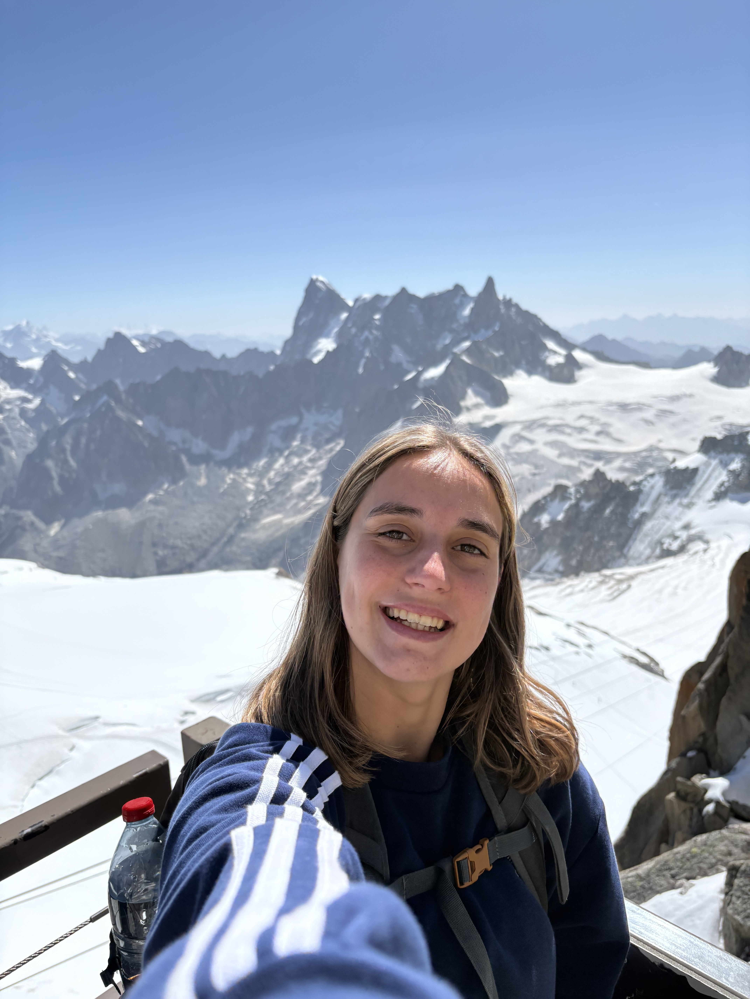

I work at the intersection of high-performance computing and quantum computing, focusing on distributed runtimes and hybrid quantum-classical systems. My research scales emerging architectures across CPUs, GPUs, and QPUs.
Optimized GPU communication and analyzed distributed AI workloads.
Developed Kubernetes-based hybrid quantum-HPC execution frameworks.
Building distributed runtime systems for quantum-classical workflows.
Distributed quantum circuit cutting library for hybrid HPC systems.
[Documentation]
Kubernetes orchestration across CPUs, GPUs, and QPUs.